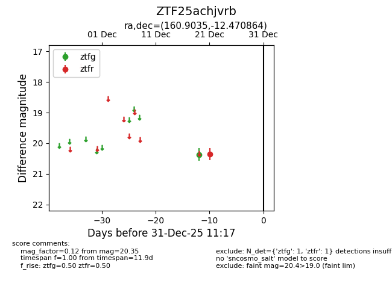
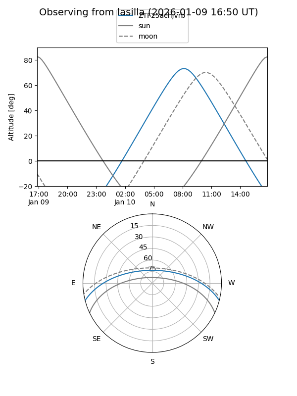

ZTF25achjvrb
Target ZTF25achjvrb at 2026-01-09 12:49
Aliases and brokers:
FINK: link
Lasair: link
ALeRCE: link
alt names
ZTF25achjvrb (ztf,fink_ztf)
Coordinates:
equatorial (ra, dec) = 160.9035,-12.47086
equatorial (HMS+DMS) = 10:43:36.83,-12:28:15.11
galactic (l, b) = (260.7325,+39.70477)
Flags:
Photometry:
last ztfg=20.37, ztfr=20.35
1 ztfg, 1 ztfr detections
Lightcurve

Visibility


Additional plots